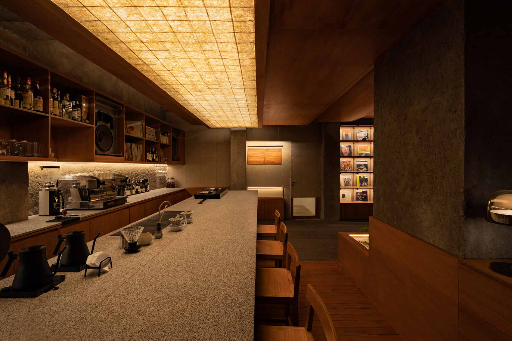

富士喫茶 | Fuji Cafe
Nơi khởi nguồn của sự tinh tế, tận tâm và nghệ thuật cà phê
Fuji Cafe được xây dựng dựa trên triết lý đề cao sự cân bằng, chất
lượng và trải nghiệm. Lấy cảm hứng từ phong cách sống tối giản của
Nhật Bản, chúng tôi tạo nên một không gian nơi mỗi chi tiết đều
được chăm chút cẩn thận, từ thiết kế, bầu không khí cho đến từng
tách cà phê được phục vụ.
Chúng tôi tin rằng một quán cà phê không chỉ là nơi để thưởng thức
đồ uống, mà còn là nơi lưu giữ những khoảnh khắc yên tĩnh, tập
trung và cảm hứng. Fuji Cafe mong muốn trở thành điểm dừng chân
đáng tin cậy, nơi khách hàng có thể tìm thấy sự thư giãn, tái tạo
năng lượng và tận hưởng những giá trị giản dị nhưng trọn vẹn.
